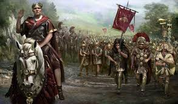
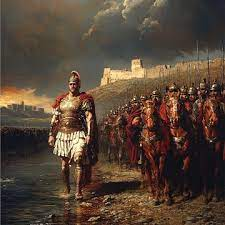
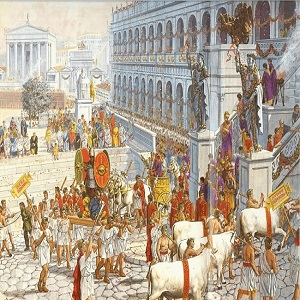

Biografía de Julio César: El hombre que cambió Roma para siempre
El nacimiento de un coloso
Cayo Julio César nació el 13 de julio del año 100 a.C. en una de las familias más antiguas de Roma, los Julios, que afirmaban descender nada menos que de Eneas, el héroe troyano, y por lo tanto, de la diosa Venus. Desde muy joven, demostró una ambición descomunal, una mente brillante y un carisma natural que lo convertirían en una de las figuras más icónicas de toda la historia.
Un joven en medio del caos
En su juventud, Roma era un hervidero de luchas internas, corrupción, guerras civiles y decadencia. César comenzó su carrera política en este ambiente turbulento, enfrentándose incluso a la dictadura de Sila, quien lo mandó a matar por negarse a obedecerlo. Afortunadamente, logró salvarse, mostrando desde joven su valentía y astucia.
El ascenso imparable al poder
César fue escalando posiciones: cuestor, edil, pretor… hasta llegar a cónsul en el año 59 a.C. Formó una alianza política poderosa conocida como el Primer Triunvirato, junto con Pompeyo y Craso, dos de los hombres más influyentes de Roma. Este pacto informal le abrió las puertas para obtener una de las mayores conquistas de su carrera: la Galia.
César en la Galia: El conquistador imparable
Durante casi una década, Julio César llevó a cabo una de las campañas militares más impresionantes de la Antigüedad: la conquista de la Galia (actual Francia, Bélgica y parte de Suiza). Sus victorias fueron espectaculares, derrotando a tribus enteras con ejércitos muy inferiores en número. Fue allí donde pronunció una de sus frases más célebres:
“Veni, vidi, vici” (Vine, vi, vencí).
Pero su fama, gloria y poder empezaron a inquietar a muchos en Roma, especialmente a Pompeyo, quien ahora era su rival.
La guerra civil y el cruce del Rubicón
En el año 49 a.C., César tomó una decisión que cambiaría el destino de Roma para siempre. Cruzó el río Rubicón con su ejército —algo prohibido por la ley— y pronunció otra frase histórica:
“Alea iacta est” (La suerte está echada)
Esto dio inicio a una cruenta guerra civil contra Pompeyo y el Senado.
Tras varias batallas, César salió victorioso. Fue nombrado dictador perpetuo, una figura con poderes absolutos. Pero aunque trajo paz y reformas a Roma, sus enemigos temían que quisiera convertirse en rey, algo aborrecido por los romanos.
Las reformas del dictador visionario
César no solo fue un gran militar. También fue un reformador. Entre sus logros destacan:
Reforma del calendario: instauró el Calendario Juliano, muy parecido al que usamos hoy.
Redistribución de tierras para los veteranos.
Ampliación del Senado, incluyendo a representantes de provincias conquistadas.
Luchó contra la corrupción y promovió obras públicas, mejorando la infraestructura de Roma.
Conclusión
Julio César fue más que un líder: fue un estratega, reformador, escritor y visionario que dejó una marca imborrable en la historia de Roma y del mundo. Su vida fue una mezcla de gloria, traición, sangre y poder. Y aunque han pasado más de 2000 años desde su muerte, su nombre sigue resonando como símbolo de grandeza, ambición y tragedia.